Introducción
En este proyecto, ¡vas a crear un juego de memoria en el que tendrás que memorizar y repetir una secuencia de colores aleatoria!
Paso 1: Colores al azar
Para empezar, vamos a crear un personaje que pueda cambiar a una secuencia de colores al azar que el jugador tendrá que memorizar.
Lista de tareas de la actividad
Crea un nuevo proyecto de Scratch, y borra el objeto gato para que el proyecto esté vacío. Puedes encontrar el editor online de Scratch en jumpto.cc/scratch-new.
Escoge un personaje y un fondo. No es necesario que tu personaje sea una persona, pero tiene que poder cambiar de color.

En el juego, usarás un número diferente para representar cada color:
- 1 = rojo;
- 2 = azul;
- 3 = verde;
- 4 = amarillo.
Da a tu personaje disfraces de 4 colores diferentes. Los colores tendrán que ser los indicados arriba. Asegúrate de que los colores de los disfraces están en el orden correcto.
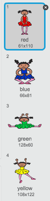
Para crear una secuencia aleatoria, tendrás que crear una lista. Una lista es simplemente una variable que almacena una gran cantidad de datos en orden. Crea una nueva lista llamada
secuencia. Como tu personaje es el único que necesita ver esta lista, también podemos seleccionar ‘Sólo para este objeto’.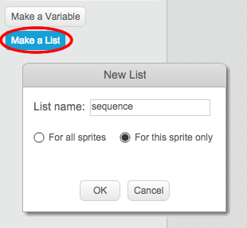
A continuación, deberías ver una lista vacía en la parte superior izquierda del escenario, y un montón de bloques nuevos para usar listas.
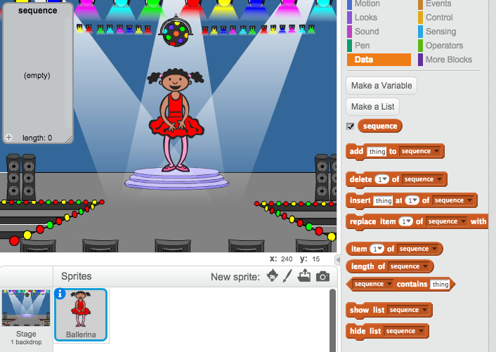
Añade este código a tu personaje para añadir un número al azar a tu lista (y mostrar el disfraz correcto) 5 veces:
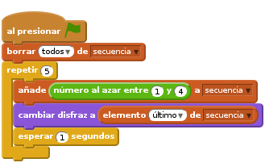
Fíjate que has vaciado la lista para empezar.
Reto: Añadir sonido
Haz varias pruebas con tu proyecto. Verás que a veces sale el mismo número dos (o más) veces seguidas. Esto hará que la secuencia sea más difícil de memorizar. ¿Puedes hacer que suene el tambor cada vez que cambia el disfraz del personaje?
¿Puedes hacer que suene un sonido diferente del tambor en función del número al azar escogido? Esto es muy parecido al código para cambiar el disfraz del personaje.
Guarda el Proyecto
Paso 2: Repite la secuencia
Vamos a añadir 4 botones para que el jugador pueda repetir la secuencia a recordar.
Lista de tareas de la actividad
Añade 4 objetos al proyecto, que se convertirán en botones. Edita los 4 objetos para que haya 1 para cada uno de los 4 colores.
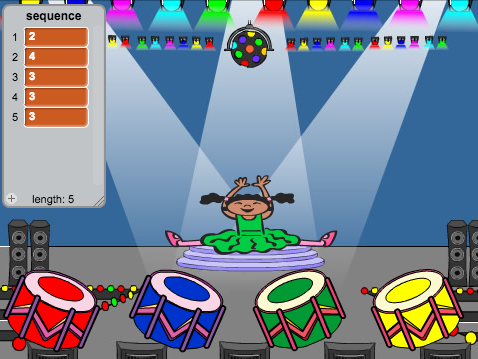
Al presionar el tambor rojo, tendrás que enviar un mensaje a tu personaje, diciéndole que se ha presionado el botón rojo. Añade este código al tambor rojo:
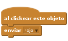
Cuando tu personaje reciba este mensaje, tendrá que comprobar si el número 1 es el primero de la lista (esto significa que el rojo es el siguiente color en la secuencia). Si lo es, puedes eliminar el número de la lista, ya que el jugador ha acertado el color. Si no lo es, ¡se acabó el juego!.
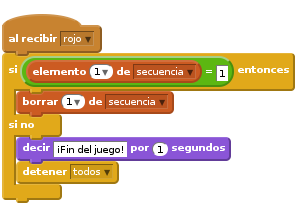
También podrías hacer que parpadeen luces cuando se haya vaciado la lista, ya que esto significa que el jugador ha acertado la secuencia entera. Añade este código al final del programa
al presionar bandera verdede tu personaje: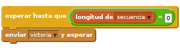
Haz clic en el escenario y añade este código para que el fondo cambie de color cuando el jugador gane.
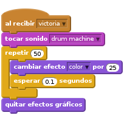
Reto: Crear 4 botones
Repite los pasos indicados arriba para los botones de color azul, verde y amarillo. ¿Qué código se quedará igual, y qué código tendrás que cambiar para cada botón?
También puedes hacer que se oigan sonidos al presionar los botones.
¡Recuerda probar el código que has añadido! ¿Puedes memorizar una secuencia de 5 colores? ¿Es la secuencia diferente cada vez?
Guarda el proyecto
Paso 3: Niveles múltiples
Hasta ahora, el jugador sólo tiene que memorizar 5 colores. Vamos a mejorar el juego, haciendo que la secuencia sea más larga.
Lista de tareas de la actividad
Crea una nueva variable con el nombre
puntuación.
Esta
puntuaciónse usará para decidir la duración de la secuencia que el jugador tiene que memorizar. Para empezar, la puntuación (y la duración de la secuencia) es 3. Añade el siguiente bloque al principio del códigoal presionar bandera verdede tu personaje:Ahora, en lugar de crear una secuencia de 5 colores, haremos que la
puntuacióndetermine la duración de la secuencia. Cambia el buclerepetir(para crear la secuencia) a: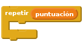
Si el jugador acierta la secuencia, deberías añadir 1 a la puntuación para aumentar la duración de la secuencia.
Para acabar, tienes que añadir un bucle
por siemprealrededor del código para generar la secuencia, y así se creará una nueva secuencia para cada nivel. El código de tu personaje debería ser así: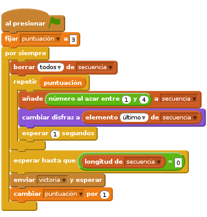
Haz que tus amigos prueben el juego. ¡Recuerda esconder la lista
secuenciaantes de que jueguen!
Guarda tu proyecto
Paso 4: Puntuación más alta
Vamos a hacer que se guarde la puntuación más alta, para que puedas competir con tus amigos.
Lista de tareas de la actividad
Añade 2 nuevas variables a tu proyecto con los nombres
puntuación más altaynombre.Si se acaba el juego (al presionar el botón equivocado), tendrás que comprobar si la puntuación del jugador es mayor que la puntuación más alta actual. Si lo es, tienes que guardar esa puntuación como la puntuación más alta y hacer que se guarde el nombre del jugador. El botón rojo debería ser así:
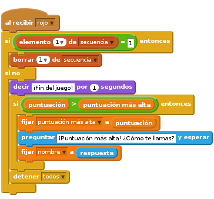
¡Tendrás que añadir este nuevo código a los otros 3 botones también! ¿Te has dado cuenta de que el código de ‘Fin del Juego’ en los 4 botones es exactamente el mismo?

Si alguna vez tuvieras que cambiar algo de este código, como añadir un sonido o cambiar el mensaje de ‘¡Fin del Juego!’, ¡tendrías que cambiarlo 4 veces! Eso sería muy pesado y te llevaría mucho tiempo.
En lugar de hacer eso, ¡puedes definir tus propios bloques y reusarlos en tu proyecto! Para hacer esto, presiona
más bloques, y a continuación ‘Crear un bloque’. Llama a este nuevo bloque ‘Fin del Juego’.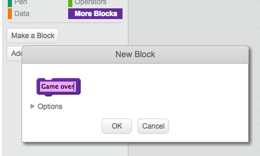
Añade el código del bloque
si nodel botón rojo al nuevo bloque que aparece:
Acabas de crear una nueva función llamada
Fin del Juego, que podrás usar siempre que quieras. Arrastra tu nuevo bloque deFin del Juegohasta los 4 programas de los botones.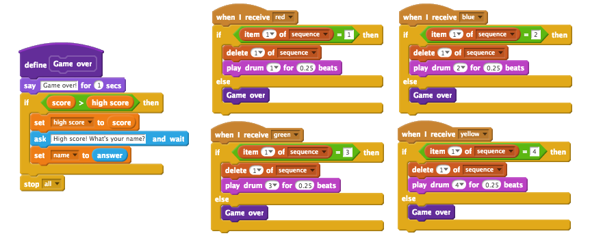
Ahora añade un sonido para cuando el jugador aprieta el botón equivocado. ¡Sólo tienes que añadir este código una vez en el bloque de
Fin del Juegoque has creado, en lugar de 4 veces!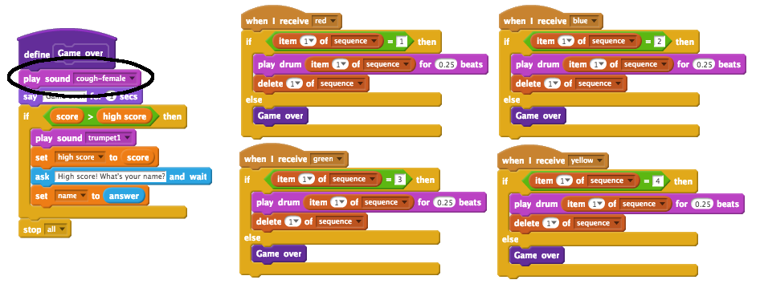
Reto: Crear más bloques
¿Puedes encontrar otro código que sea el mismo para los 4 botones?
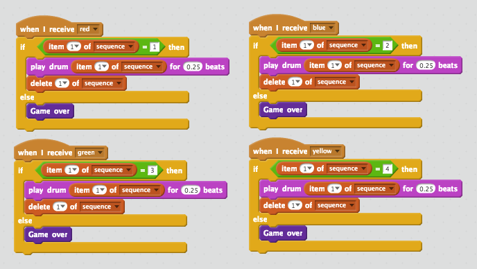
¿Puedes crear otro bloque personalizado, que se pueda usar en todos los botones?
Guarda tu proyecto
Reto: Otro disfraz
¿Te has dado cuenta de que el juego empieza con el personaje vestido con uno de los 4 colores, y que siempre muestra el último color de la secuencia mientras el jugador repite la secuencia?
¿Puedes añadir otro disfraz de color blanco para el personaje, que aparecerá al principio del juego y cuando el jugador está intentando copiar la secuencia?

Guarda el proyecto
Reto: Nivel de dificultad
¿Puedes hacer que el jugador pueda escoger entre ‘modo fácil’ (usando sólo los tambores rojo y azul) y ‘modo normal’ (usando los 4 tambores)?
Incluso podrías añadir un modo ‘difícil’, ¡en el que se use un quinto tambor!